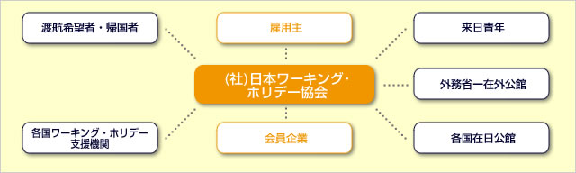

<?php
require_once 'include/header.php';

$header_obj = new Header();

$header_obj->fncFacebookMeta_function=true;

$header_obj->title_page='日本ワーキング・ホリデー協会概要';
$header_obj->description_page='一般社団法人日本ワーキング・ホリデー協会は、ワーキングホリデー制度を促進する非営利団体です。カウンセリングや帰国後の就職活動サポートなど、これからもワーキングホリデーの参加者を応援してまいります。';

$header_obj->fncMenuHead_imghtml = '';
$header_obj->fncMenuHead_h1text = '日本ワーキング・ホリデー協会について';

$header_obj->display_header();

?>
	<div id="maincontent">
	  <?php echo $header_obj->breadcrumbs(); ?>

	<h2 class="sec-title">一般社団法人日本ワーキング・ホリデー協会とは</h2>
	<p class="text01">
		一般社団法人日本ワーキング・ホリデー協会（JAWHM）は、ワーキングホリデー制度を支援し、促進している社会一般利益の公益を目的とする非営利団体です。
		公益社団法人日本ワーキングホリデー協会は1985年に厚生労働省の外郭団体として設立され2010年に破産通告を受けるまでの25年間に実に35万人以上のワーキングホリデービザ発給に貢献しておりましたが、
		大手航空会社も破綻してしまうほどの厳しい時代の変化について行けず、毎年２万人ものワーキングホリデー渡航者へのサービス提供が困難になっていました。
		当時サービス中止後に、今後のワーキングホリデー制度継続の問い合わせと渡航サポート等についての問い合わせが集中し利用者に困惑を招いていたため現在の一般社団法人日本ワーキングホリデー協会が設立されました。
		新理事長に海外事情や海外留学に詳しく海外で公認会計士として活躍していた現理事長を選任し新団体としてワーキングホリデー留学の為の情報提供の継続とサービス提供の為の運営再建に取り組み始めました。
	</p>
	<p class="text01">
		現一般社団法人日本ワーキング・ホリデー協会は旧日本ワーキングホリデー協会より商号及びそれに関する利益の一切を法的措置に則り譲渡されており、法的条件通り速やかにサービス提供および運営を始めております。
		日本ワーキング・ホリデー協会は25年間の中で培われたサポートを提供するとともに、現在では現地サポート強化、ワーキングホリデーガイドブック、全国の大学、国際センターとの協力によって
		ワーキングホリデー渡航者サポートをスタートさせています。
		今まで以上に強い金融機関との協力関係や海外現地サポートなどによって利用者の保護に努めており、安心して利用していただける環境を整えております。
	</p>
	<p class="text01">
		旧団体がサービス停止に至った理由は運営コストによる経営圧迫でしたので、新団体ではコスト削減を徹底的に行っております。運営コスト削減の為にまず取り組んだのが本格的な業務のIT化です。
		紙の使用を減らしシステム処理を大幅に増やし、人件費削減、オフィス経費削減、外部委託できるものは委託するコスト削減と同時にサービス向上を徹底しています。
		現地サポートはその良い例です。現地留学サポート会社に委託することによってサポート都市も増え、サポート内容も大きく向上しています。
		その結果経営体質の改善が急ピッチで進み業績が急回復し、全国大学生協との提携や在海外人材会社等とのサービス提供の幅も急拡大しています。
		ワーキングホリデー留学の利用者層は18～31歳の若い人ですので、利用者層のイメージに合ったオープンなオフィス雰囲気を作ったり、オフィスをアクセスの良い新宿駅の近くにしたりという利用者のそばに歩み寄る努力をしております。（オフィス住所：東京都新宿区西新宿1-3-3）
	</p>
    <center><a href="/philosophy.html" target="_blank"></a></center>
        
	<h2 class="sec-title">日本ワーキング・ホリデー協会現地サポートの取り組み</h2>
	<p class="text01">
		海外現地サポートは現在すべて現地留学サポート会社に委託しています。
		会員の方は現地でのサポートが無料で（各サービスは有料の都市もあります）利用できるように提携しており会員へ安心を提供できるよう考えております。
		オーストラリアではシドニー、ブリスベン、パース、ゴールドコースト、メルボルン等、５都市６社と現地サポート業務提携を結んでいます。
		カナダに関してもバンクーバーとトロントの２都市３社、各都市で現地サポートが可能です。
		協会独自のオフィスを現地に持つことより大幅にコスト削減ができ、提供サービス数も大幅に増え、利用者様には安心してご渡航いただけます。
	</p>

	<h2 class="sec-title">日本ワーキングホリデー協会の留学カウンセラーの取り組み</h2>
	<p class="text01">
		今まで以上にプロフェッショナルな留学カウンセラーを育成しワーキングホリデー留学のためのサービス提供を開始致しました。
		当協会の留学カウンセラーは全スタッフが海外留学経験者もしくはワーキングホリデー経験者で、TOEIC900点やIELTS 6.0（アイエルツ）取得者、海外専門学校や海外大学卒業者が勤務しております。
		海外滞在歴も1年～20年のスタッフで日本語と英語とフランス語での対応が可能です。
	</p>
	<p class="text01">
		日本ワーキングホリデー協会の強いところは海外英語圏での働きながら留学するビザや国に詳しいと言う事です。
		この特徴を生かし、現在ではオーストラリア留学、カナダ留学、アメリカ語学留学、イギリス留学、ニュージーランド留学、アイルランド留学、の手続きと出発サポートも行っております。
		その場合でも現地サポートを利用できますので利用者の方には安心して留学していただいています。
	</p>
	<p class="text01">
		そして毎年現地語学学校を視察に行っております。実際に授業風景を見たり校長先生に学校のモットーを聞いたり、学校の風紀が乱れていないか、国際色が偏っていないか、生徒のケアはできているか、
		清潔度は守られているか、卒業生の英語力は伸びているかと留学カウンセラーの目で実際に審査しています。
	</p>
	<p class="text01">
		より良い情報提供と安心を提供できるように心がけております。
	</p>

	<h2 class="sec-title">日本ワーキングホリデー協会の各国大使館と政府観光局との取り組み</h2>
	<p class="text01">
		日本ワーキングホリデー協会では各国大使館と連携してワーキングホリデーの日本での普及と各国への留学生の派遣にも尽力しております。<br />
		ワーキングホリデービザの振興の為にオーストラリア大使館、ニュージーランド大使館、アイルランド大使館との共同無料セミナー開催や政府観光局と協力して大学生をターゲットにしたイベントの企画と運営を行っています。<br />
		各国大使館とは上記以外にも重要な活動をしています。
	</p>
	<p class="text01">
		カナダ大使館、オーストラリア大使館に2012年3月の提言書にビザの規制を変更していただく旨を提言させていただいております。<br />
		「現在30歳までの年齢制限を35歳までに変更してもらうこと」<br />
		「現在現地で一度に語学留学できる修学可能期間が4カ月～6ヶ月のところを1年の無制限に変更してもらうこと」<br />
		を直接カナダ大使殿とオーストラリア大使殿と話をして要望しております。<br />
		2012年6月にはその提言者が政府の移民局まで上げていただいたという旨のレターを大使から受け取りましたので良い方向に向かう事を信じております。<br/>
    <br/>
        アイルランド大使館には、現在の「25歳まで(条件付きで30歳まで)」という申請条件を「無条件で30歳まで」に変更していただけるよう提言しております。
    </br>
    ※2015年より条件が緩和され、どなたでも30歳まで申請出来るようになりました。 
    </br>
	</p>

	<h2 class="sec-title">日本ワーキングホリデー協会と日本政府の取り組み</h2>
	<p class="text01">
		ワーキングホリデーの地位向上の為に日本政府にも協力要請をしております。日本国政府には内閣官房長官主導のグローバル人材育成推進会議において30万人の日本人留学生創出のうち
		韓国と同じ10万人をワーキングホリデービザ留学での推進、そして東京大学秋入学に伴うギャップタームの導入でのワーキングホリデーの推進を提言しております。
	</p>
	<p class="text01">
		各省庁の文部科学省、外務省、経済産業省、厚生労働省とも連携を取りながら英語教育、留学生増加、グローバル人材育成のスピード化を図り日本国の国益となるように各機関に働きかけております。<br />
		2012年6月5日の国家戦略会議グローバル人材育成戦略　グローバル人材育成推進会議　審議まとめには厚生労働省の管轄としてワーキングホリデー等の海外での経験を有する若年者の経験を生かした就職を実現できるようキャリア形成支援の体制を整備する。
		とワーキングホリデー経験者の地位向上を就職支援という形で実現していく提案が盛り込まれました。
	</p>
	<p class="text01">
		この審議書は他国のように政府主導の国家戦略の一環としてワーキングホリデーの利用が推進されていくものと奨励しています。制度開始から30年以上たちやっと諸外国のように政府が目を向けてくれたものと、大きな第一歩と捉えています。<br />
		以下審議書より<br />
		☆海外インターンシップやワーキングホリデー等の海外での経験を有する若年者が、その経験を生かした就職を実現できるよう、渡航前から帰国後まで一貫したキャリア形成支援の体制を整備する。　【厚】
	</p>

	<h2 class="sec-title">日本ワーキングホリデー協会と大学生協の取り組み</h2>
	<p class="text01">
		ワーキングホリデー留学の利用者の4割が大学生という事実を踏まえ、2012年から日本全国の大学生協でのサポートも開始致しました。より多くの大学生、専門学校生にワーキングホリデー留学ビザの利用方法が伝わることを願っております。
		特に夏休み、1、2、3月の春休みを利用しての短期留学で海外滞在とは海外で働くとはというワーキングホリデーを体験していただくことに価値があると考えています。<br />
		また各大学、専修学校での無料セミナー講師派遣も始めております。学生に制度を知ってもらい学生が自分で考えて行動する。その行動先が海外であれば将来世界で活躍する意識のきっかけになればと考えておりますので学校法人の方はお気軽にお問い合わせください。
	</p>

	<h2 class="sec-title">日本ワーキングホリデー協会と保険会社との取り組み</h2>
	<p class="text01">
		保険業界にも以前よりワーキングホリデーに特化した留学保険の開発を各保険会社に要請しておりました。この度ようやく2012年6月からAIG保険会社様より「ワーキングホリデー保険」として専用プラン、専用パンフレットが完成し販売開始することが決定しました。<br />
		東京大学秋入学に伴いギャップタームでのワーキングホリデー利用者の増加を見込み、医療費用が「無制限」で保障され、大学生の親御様にも安心・納得いただけるプランが揃っています。<br />
		海外でインターンシップや研修などにも適用できるプランになっていますので大学生の短期留学での利用が可能となっています。<br />
	</p>

	<h2 class="sec-title">来日への外国人ワーキングホリデー青年の取り組み</h2>
	<p class="text01">
		当初の再建予定では年間1万5千人の毎年日本に来日するワーキングホリデー外国人への宿泊施設アコモデーション、仕事情報提供サポートも含まれておりましたが3月11日の東北大震災以降来日ワーキングホリデー数が大幅に減少しました。
	</p>
	<p class="text01">
		しかしながら2012年6月くらいから外国人ワーキングホリデーが直接東京オフィスに来られるようになっています。2011年3月以前のように毎日10人20人来られるといいのですがなかなかそこまでの回復は数年では難しいでしょうか。観光庁とも協力して復旧に尽力してまいります。<br />
		外国人ワーキングホリデーの方は積極的に当協会が運営している<a href="http://www.facebook.com/JapanWorkingHoliday" target="_blank">フェイスブック</a>にコンタクトを取られています。<br />
		今はまだ日本に到着していいないが近くワーキングホリデーで日本に来日するという方からの質問で多いのは<br />
		「日本ではどんな仕事がありますか？」という仕事に関する質問です。<br />
		現在来日ワーキングホリデー外国人への仕事紹介はこの<a href="http://www.job-board.info/" target="_blank">ジョブボード</a>を無料で提供しております。<br />
		既に何件も仕事やバイト案件も成立しており企業様にも来日ワーキングホリデー外国人にも利用されています。
	</p>

	<h2 class="sec-title">帰国後の就職のサポートの取り組み</h2>
	<p class="text01">
		帰国ワーキングホリデー経験者の就職サポートはこちらの<a href="http://www.job-board.info/" target="_blank">ジョブボード</a>の利用を紹介しています。<br />
	</p>
	<p class="text01">
		英語保育園やシンガポールでの仕事のほかZARAやマクドナルドからの掲載もありましたので日本語以外を使える人材を求める企業様そして帰国したワーキングホリデー経験者の方は是非ご利用下さい。<br />
		このジョブボードは<br />
		　・　来日外国人留学生<br />
		　・　来日ワーキングホリデー外国人<br />
		　・　日本人帰国ワーキングホリデー経験者<br />
		　・　日本人留学経験者<br />
		にも利用されています。日本のみならずシンガポールやロンドンの正社員就職の情報も掲載されています。英語を使って日本や海外で就職したいというかたの架け橋になることを願っています。
	</p>
	<p class="text01">
		今後は求職者の方が自分のプロフィールを載せられる「英語を使って働きたいです」と、いうカテゴリーを作成して
		来日外国人のみならず来日外国人留学生、来日ワーキングホリデー外国人、日本人帰国ワーキングホリデー経験者、日本人留学経験者留学帰国者、
		の方に企業からアプローチが貰える機能も付けて、海外経験を生かして日本で活躍できるサポートができればと考えております。
	</p>
        
        
<!--
	<h2 class="sec-title">日本ワーキング・ホリデー協会　37の支援制度の取り組み</h2>
	<p class="text01">
		「ワーホリで日本を変えたい」<br/>
        こんなミッションを持っている日本ワーキングホリデー協会のカウンセラー及びサポートスタッフには、
        楽をしたいという気持ちを抱くより、 「一生懸命楽しんで情熱的に働いてほしい」と、願っています。情熱は伝染する。
        そんなスタッフに育ってほしいためにスタッフから出てきた アイデアを元に躍進できる制度を作っています。<br/>
        <center><a href="/37.html" target="_blank"></a></center>
	</p>
-->
        
        
        

	<h2 class="sec-title">ワーキングホリデーのこれから</h2>
	<p class="text01">
		大胆な社団法人の体質改善と同時に、公益目的として全国の若者にワーキングホリデー制度を知っていただけるよう2011年夏には全国、北海道から沖縄まで20カ所での無料セミナーの開催は読売新聞やヤフーニュース等にも取り上げられ延べ２０００名以上の来場がありました。
		その他にも普及活動としてワーキングホリデーガイドブックの刊行と大阪オフィスのオープン（大阪市北区梅田　大阪駅前第一ビル２F ）での関西方面でのワーキングホリデーサポート提供開始も更なる利便性を提供できるものと考えております。
	</p>
	<p class="text01">
		2011年度にはワーキングホリデーでの留学先の現地サポートをオーストラリア、カナダ、英国、ニュージーランド、フランスでも提供するべく現地オフィスと提携し現地での渡航者のサポートを開始しました。
		2010年からの再建は当初の予定より大幅に早く大手銀行からの信用回復を頂き、2012年1月には経営良好な法人として認められ、
		国内大手金融機関と税理士法人の３社共同での、留学生とワーキングホリデー生の保護を徹底するファイナンシャルシステム、海外学費保全システムJSPS（Japan Student Protection Scheme）を構築させることができました。
		現在このJSPSシステムを日本から出発する全留学生に提供できるようにシステム整備を行っております。
	</p>
	<p class="text01">
		そして積極的にグローバル人材育成の為の活動を行っております。日本の少子化へのスピードや増加する内向きな現代若者への危惧から、日本政府にもワーキングホリデービザ利用の推進を促し、グローバル人材育成のスピード化に尽力しています。
		お隣韓国では毎年10万人がワーキングホリデービザを利用して留学をすることに対して、日本では約2万人。　日本の人口は韓国の2.5倍以上あることを考えるとこれは危機的数字と言う事が分かります。
	</p>
	<p class="text01">
		日本ではワーキングホリデー留学の地位向上が求められており、文部科学省、外務省、厚生労働省、経済産業省とも協力しながらグローバル人材育成の為のワーキングホリデー留学の提案、大学9月入学へのギャップタームでの利用促進提案を行っております。
	</p>
	<p class="text01">
		今年度の日本ワーキングホリデー協会セミナー参加者予測数は15000人。東京、大阪、名古屋、福岡、沖縄での定期的な無料セミナーや懇談会、語学学校相談会は昨年よりもはるかに多く、都市部以外での地方でのセミナーの数も多くなっております。
		東大秋入学によるギャップターム活用にイギリスのようなワーキングホリデー利用推進もあり、年間約２万人の渡航者数を年間10万人にまで増やす計画です。
	</p>
	<p class="text01">
		現在の10代20代が将来、日本のみならず海外でも活躍する人材に成ること、一人でも多くそのような人材が増えることを願っており、渡航した留学生や帰国した留学生からの嬉しい報告には一緒に喜びを共有できるような、より身近な存在になり一緒に成長できる協会であるよう心がけております。
	</p>
	<p class="text01">
		今後ともどうぞよろしくお願い申し上げます。
	</p>

	<h2 class="sec-title">事業内容</h2>
	<p class="text01">
		一般社団法人日本ワーキング・ホリデー協会では、ワーキング・ホリデー制度の普及と地位向上の為にさまざまな活動を行っています。
	</p>
	<p class="text01">
		渡航希望の日本人と来日外国人へのサポートとして、渡航準備や渡航先国に関する情報提供を行っております。<br />
		以下は利用者へのサービスの一部となります。<br />
		　・　無料留学セミナー<br />
		　・　無料ワーキングホリデーセミナー<br />
		　・　出発前準備セミナー<br />
		　・　ビザ取得サポート<br />
		　・　海外情報提供<br />
		　・　個人面談カウンセリング<br />
		　・　帰国後の就職セミナー<br />
		　・　海外留学保険、ワーキングホリデー保険の紹介<br />
		　・　留学費用説明会<br />
		　・　海外語学学校からゲストを招いての留学フェア<br />
		　・　現地サポート（オーストラリア、カナダ、イギリス、フランス、ニュージーランド）<br />
		　・　オーストラリア大使館、カナダ大使館、ニュージーランド大使館、イギリス大使館、アイルランド大使館、デンマーク大使館、ドイツ大使館、フランス大使館、韓国大使館、中国大使館、台北経済文化代表処、アメリカ大使館との協力<br />
		　・　各国大使館へのビザの改善請求、利用者支援<br />
	</p>
	<p class="text01">
		また留学経験者とワーキングホリデー経験者と来日外国人を対象とした
		人材紹介システム（<a href="http://www.job-board.info/" target="_blank">ジョブボード</a>）を利用した帰国後の就職紹介も行っております。<br />
		ワーキング・ホリデー制度を利用して来日中の外国人青年に対して、日本の生活に関する情報提供および職業紹介も行っております。
	</p>

	<h2 class="sec-title">ご挨拶</h2>
	<p class="text01">
		ワーキング・ホリデー制度は日本の若者が協定国先で1年もの間（国によって2年間）留学しながら働けるという特別なビザです。 この特別なワーキング・ホリデービザを利用し海外に渡航する日本人を増やし、
		来日する外国人も増やして両国間の相互理解、国際交流が盛んになり日本にもっと多くのグローバル人材が育つように日本ワーキングホリデー協会は活動しております。
	</p>
	<p class="text01">
		『留学』と言うと費用が高くて、英語がしゃべれないとだめで、凄く大変なこと！私には無理！というイメージがまだまだあります。しかしそれはすべて間違っています。ワーキングホリデーでの留学は安くできます。毎年2万人の英語が全くできない人が出発しています。
		大変な事も有りますが帰国者は全員早く行った方がいいよ～というほど無理な事は全くありません。
	</p>
	<p class="text01">
		留学費用の多くを占める現地での生活費用は自分で稼げるのでかかりませんし、日本以上に稼げる国も有ります。
	</p>
	<p class="text01">
		毎年出発する約2万人日本人の95％以上の人は英語力が初級で渡航していますし治安も安全な国が多いので誰でもワーキングホリデー留学に行くことが可能です。18歳～32歳のワーホリ生が感動の毎日を送っています。
		20歳で初めての海外なのにそれがワーキングホリデーで現地で自炊生活をこなしていたりします！しかしそれはあまり知られていません。実際毎年2万人もの日本人がワーキングホリデービザを利用して渡航しています。
		なんとそのうちの7割は女性です。それだけ安全で多くの人が利用していますが知名度があまりないので諸外国のように利用者が増えておりません。諸外国では国家政策としてワーキングホリデーの利用でのグローバル人材育成に力を入れています。
	</p>
	<p class="text01">
		日本でも東日本大震災の後に問い合わせが増えており、英語習得を強く願う若者も増えています。TOEIC900点やケンブリッジ英検合格という成功体験談をもつワーホリ留学生も増えています。
		そのように努力してきた方の帰国後の就職のサポートも少しずつですが始めています。世界で活躍できて、企業に求められるグローバル人材育成に力を入れています。
	</p>
	<p class="text01">
		言葉も通じない海外での慣れない生活は決して楽ではありませんが皆さんが費やした努力以上の価値があります。
		努力して一歩一歩創造していける自分に気付くはずです。それは人生の中で大きな自信に変わります。今までそんな経験ありました？世界中のどこに行っても住んでいける感覚と自信をすでに持っていますか？
	</p>
	<p class="text01">
		昨今の日本人のコミュニケーション能力の低さ、英語能力の低さ、海外へ行きたがらない内向きな若者たち、ひいては就職率の低下を改善するためにも 高校や大学終了時の進路の選択肢の一つとして、
		ワーキング・ホリデービザを利用することは英国では主流となっています。韓国では政府がワーキングホリデーを促進し助成金も充てられています。
		日本よりも人口が３分の1と少ないのにワーキングホリデー利用者は日本人の５倍以上の10万人です！　
		日本ワーキングホリデー協会では日本政府と協力しながら韓国のように年間ワーキングホリデー10万人を目標に普及活動とワーキングホリデーの地位向上の為に尽力しております。
	</p>
	<p class="text01">
		海外で英語能力、コミュニケーション能力、バイタリティー、国際知識、世界中の友達を作って海外就職や日本での就職において大きな自信になります。
		人生の若い時期に人生を創造できる自信を持てれば、明るく新しい自分の未来のみならず、日本国を創造できる若いグローバル人材に育つことができると言えるでしょう。
	</p>
	<p class="text01">
		また昨今の海外進出企業がほしがる人材はまさにワーキングホリデー経験者が身に付ける主なスキルと一致しています。　そのような利点を生かして就職活動だけではなく人生に胸を張って進んでほしいと願っています。
	</p>
	<p class="text01">
		ワーキングホリデー留学で身に付くスキル：<br />
		　・　マルチカルチュアリズム社会での国際理解<br />
		　・　国際人、日本人としての意識<br />
		　・　ダイバーシティーへの変化対応能力<br />
		　・　国際経済と国際事情<br />
		　・　地球環境問題意識<br />
		　・　男女共同参画社会<br />
		　・　人種・性別による差別や偏見の根絶<br />
		　・　思想・信教表現の自由の尊重<br />
		　・　独立心とバイタリティー<br />
		　・　ゼロからのコミュニティーづくり<br />
	</p>
	<p class="text01">
		ワーキングホリデーで海外に留学や仕事に行った先輩たちは英語力とコミュニケーション能力の向上は目を見張るものがありますが、それ以上に意識がグローバル化して友達の輪も世界中に広がって帰国しています。企業がほしがる人材になれます。
		大学生で休学して1年間ワーキングホリデーに行って現地で働きながら英語修得した大学生が現地で就職が決まったケースもあります。
	</p>
	<p class="text01">
		成功する人は挑戦しているから得るものも多いのです。挑戦せずして成功はありません。リスクを冒してでも挑戦して下さい。
		今日努力した人に明日が訪れまた挑戦できます。一番の失敗は挑戦しない人ではないでしょうか。とにかく思い切ってやってみてください。
	</p>
	<p class="text01">
		日本は島国で単一民族国家です。人種差別を感じることもなければ、人種の違う友達が普通にいるという事も有りません。日本に居るだけでは絶対に見られないもの、感じられない感覚が沢山あります。
		観光旅行では絶対に作れないディープな友達もできます。現在の若者は本当に恵まれており、気軽に留学に行ける時代になっています。<br />
		これから30年で日本の人口が3割以上も減少し経済はもっと縮小します。そんな日本に危機感を抱きグローバルな人材になる為にはもっと多くの日本人若者にワーキングホリデー制度を体験してほしいと願っています。
	</p>
	<p class="text-right">一般社団法人 日本ワーキング・ホリデー協会<br />理事長　池口　洲</p>


	<h2 class="sec-title">会員制度のご紹介</h2>
	<p class="text01">
		勤労青少年の国際感覚と自主性を培うワーキング・ホリデー制度に関する業務を円滑に運営する当協会の目的にご賛同の上、国際貢献・社会貢献の一環として会員にご加入頂けますよう、お願い申し上げます。
	</p>
	

	  <h2 class="sec-title" id="deal">特定商取引に関する表記</h2>
	  <div class="table-base">
	    <h3 class="table-base-title">販売主体に基づく表示</h3>
	    <table>
		  <tr>
		    <th>団体名称</th>
			<td>一般社団法人 日本ワーキング・ホリデー協会</td>
		  </tr>
		  <tr>
		    <th>代表責任者</th>
			<td>理事長　池口　洲</td>
		  </tr>
		  <tr>
		    <th>所在地</th>
			<td>〒160-0023<br />
			  東京都新宿区西新宿1-3-3 <br />
		    品川ステーションビル新宿5階　507</td>
		  </tr>
		  <tr>
		    <th>連絡先</th>
			<td>メール: info@jawhm.or.jp　　TEL: 03-6304-5858　　FAX: 03-6745-1562</td>
		  </tr>
		  <tr>
		    <th>電話受付時間</th>
			<td>月～金曜日（祝祭日を除く）　午前１０時から午後６時まで</td>
		  </tr>
		  <tr>
		    <th>ホームページ</th>
			<td>http://www.jawhm.or.jp/</td>
		  </tr>
		  <tr>
		    <th class="th-end">メールアドレス</th>
			<td class="td-end">info@jawhm.or.jp </td>
		  </tr>
		</table>
	  </div><!--table-baseEND-->
	  <div class="table-base">
	    <h3 class="table-base-title">販売・商品条件についての表示</h3>
	    <table>
		  <tr>
		    <th>販売価格</th>
			<td>メンバー会員登録料として５０００円（税込） ／　３年間有効</td>
		  </tr>
		  <tr>
		    <th>代金支払い時期</th>
			<td>代金前払い</td>
		  </tr>
		  <tr>
		    <th>代金の支払い方法</th>
			<td>
				■ クレジットカード<br />
				■ 銀行振込<br />
				■ コンビニエンス決済<br />
				　　【<a href="http://www.digitalcheck.co.jp/service/guide/seven.html" target="_blank">セブンイレブン】</a><br />
				　　【<a href="http://www.digitalcheck.co.jp/service/guide/lawson.html" target="_blank">ローソン</a>】<br />
				　　【<a href="http://www.digitalcheck.co.jp/service/guide/famima.html" target="_blank">ファミリーマート</a>】<br />
				　　【<a href="http://www.digitalcheck.co.jp/service/guide/seico.html" target="_blank">セイコーマート</a>】<br />
				　　【<a href="http://www.digitalcheck.co.jp/service/guide/yamazaki.html" target="_blank">デイリーヤマザキ・ヤマザキデイリーストアー（携帯バーコード）</a>】<br />
				　　【<a href="http://www.digitalcheck.co.jp/service/guide/onlinekessai.html" target="_blank">サークルKサンクス・デイリーヤマザキ・ヤマザキデイリーストアー</a>】<br />
				　　【<a href="http://www.digitalcheck.co.jp/service/guide/ministop.html" target="_blank">ミニストップ</a>】<br />
&nbsp;<br />
※領収証の発行はコンビニ店舗では行っておりません。<br />
※海外からのメンバー登録の場合、コンビニエンス決済対象外となります。<br />
※リンク先の別サイトはコンビニエンス決済対象外となります。<br />
※メンバーの更新時及び再発行に係る料金は、コンビニエンス決済対象外となります。<br />
		  </tr>
		  <tr>
		    <th>商品代金以外の必要料金</th>
			<td>
				■ 銀行振込でお支払の場合、振込手数料はお客様の負担となります。<br />
				■ コンビニエンス決済でお支払の場合、決済手数料はお客様の負担となります。<br />
			</td>
		  </tr>
		  <tr>
		    <th>サービスの開始時期</th>
			<td>ご入金確認後７日以内<br />
		    メンバーカードなどはサービス開始後１週間程度で当協会指定の宅配事業者によってお届けします。</td>
		  </tr>
		  <tr>
		    <th>返品・交換・キャンセル等</th>
			<td>
				ご入金後６０日以内であれば、メンバー登録の取り消しが可能です。<br />
				但し、当協会のサービス開始前に限ります。<br />
				（メンバー会員登録料を銀行振込にて返金する場合、振込手数料はお客様の負担となります。）<br />
			</td>
		  </tr>
		  <tr>
		    <th class="th-end">申し込み方法</th>
			<td class="td-end">ホームページ及び協会窓口</td>
		  </tr>
		</table>
		
	  </div><!--table-baseEND-->
	  <h3 class="table-base-title">メンバー規約</h3>
	  <p class="text01">メンバー規約については、<a href="privacy.html#memberkiyaku">こちら</a>をご覧下さい。</p>
	  <h3 class="table-base-title">個人情報の取り扱いについて</h3>
	  <p class="text01">個人情報の運営方針については、<a href="privacy.html">こちら</a>をご覧下さい。</p>
	  <h3 class="table-base-title">リンクについて</h3>
<!--
	  <p class="text01">当協会ウェブページへのリンクをご希望の方は、<a href="e/links.html">こちら</a>をご覧下さい。</p>
-->

<!-- <script type="text/javascript" src="https://go.pardot.com/dcjs/401302/1434/dc.js"></script> -->


	  <div class="top-move">
	    <p><a href="#header">▲ページのＴＯＰへ</a></p>
	  </div>
	</div>
  </div>
  </div>

<?php fncMenuFooter($header_obj->footer_type); ?>

</body>
</html>